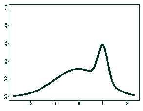

Estimation of mixtures of distributions
Eric Järpe
Seminar paper 1996:4, Göteborg University, Göteborg
Abstract
Two problems came up due to an econometrics investigation.
They concern maximum likelihood estimation of parameters in
a mixed distribution. The stochastic model used, to approach
this, is the classical one, simpliest of mixtures
W = U X1 + (1-U) X2
where X
1 and X
2 are normal random variables
(e.g. salaries) of two groups (e.g. half- and full-time employees)
and U is a 0-1-variable. The questions is, if possible, how to
estimate the different parameters in the probability density
function of W.

PDF of a mixture
Email
me and i will send you a copy of the whole work (in Swedish).